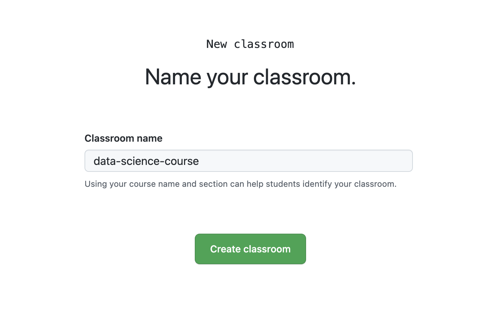

Reproducible workflows: Quarto, Git, GitHub
rstudio::conf(2022)
Designing the data science classroom
Mine Çetinkaya-Rundel
In progress
Warning
These slides are currently being designed and built.
Why Git + GitHub?
- Version control: Lots of mistakes along the way, need ability to revert
- Collaboration: Platform that removes barriers to well documented collaboration
- Accountability: Transparent commit history
- Early introduction:
- Mastery takes time, earlier start the better
- Marketability in industry
Goals for version control
Centralize the distribution (and collection) of all student assignments
Enable students to work collaboratively
Make Git & GitHub part of student workflow
- Version control is a best practice for reproducible research
- Widely used in industry and academia
- Publish / share work
GitHub as your Learning Management System
Basic Structure
On Github
1 organization per class
1 repo per (student or team) per assignment
Student and team repos all private by default
Setting up a course
- Create a free course organization on GitHub: github.com/organizations/new
- Request teacher benefits: education.github.com/discount
- Add organization to GitHub Classroom: classroom.github.com
- Invite students to organization
- Create assignment(s)
- Collect assignments(s)**
- Grade assignment(s)**
1️⃣ Create course organization
Select the option for a free course organization.
2️⃣ Request teacher benefits

Required information
You will need to provide the following to request teacher benefits:
A brief description of how you plan to use GitHub
Establishing connection to an academic institution by verifying with a school-issued email address + school ID or some other proof of academic affliation
Information about the school - link to website, address, etc.
Verification is manual and can take up to a few days.
3️⃣ Add organization to GitHub Classroom
Click New Classroom and select the GitHub organization.
You can skip the remaining set up steps for now.
4️⃣ Invite students
Member Privileges
Member Privileges (cont.)
Member Privileges (cont.)
Doing things with the GitHub UI could get tedious…
üì¶ ghclass
üì¶ ghclass
Tools for managing github class organization accounts
- Made for instructors who use GitHub for class management, e.g. assignments distributed via GitHub repos
- The package assumes that you’re an R user, and you probably teach R as well, though that’s not a requirement since this package is all about setting up repositories with the right permissions, not what your students put in those repositories.
Installation
Use the code below to install ghclass
Use the code below to load ghclass
Collect data from students
Need students’ GitHub usernames at a minimum
Recommend collecting emails, as students might make a typo in their GitHub username
Prior to collecting data…
You need to instruct students to create GitHub accounts
Consider data privacy rules of institution / country (e.g. you may need to enter a data protection agreement for GDPR compliance)
Give some guidance for choosing a username
- See “Username Advice” on Happy Git with R: happygitwithr.com/github-acct.html
Can have students choose and submit username as an in-class activity during the first week of classes.
Behind the scenes: GitHub tokens
ghclass uses the GitHub API to interact with your course organization and repos - the API verifies your identity using a personal access token which must be created and saved in such a way that ghclass can find and use it.
- Create token at github.com/settings/tokens
- Once created, save the
GITHUB_PATusing
Behind the scenes: GitHub tokens
- If the token is found and works correctly the following code should run without error
- If instead the token is invalid or not found, you will see something like the following
Inviting students
Invite students
- This will generate an email to students.
- Instruct students to check their email and follow the instructions.
## ✔ Invited user 'minebotmine' to org 'design-ds-class'.
## ✔ Invited user 'rundel' to org 'design-ds-class'.Check member status
- Who is already in?
- Who still didn’t accept their invitations?
Creating assignments
Creating assignments - big picture
- Create a starter repo, keep it private and make it a template
- Clone the repo and add any starter files (template qmd, data, instructions, etc.)
- Commit and push your changes to the repo
- Use the
org_create_assignment()function to create copies of the starter repo with correct permissions for each of your students (or teams)
Creating your starter repo
Make your starter repo a template
Prepare your starter repo
- Clone it locally
- Add any necessary files
- Commit and push
[DEMO]
Create assignments
[DEMO]
Your turn
Go to the course organisation on GitHub: github.com/teach-ds-conf22
Locate your HW 01, read through the Getting Started section, follow the instructions.
Then, go through the Hello Git and Warm up sections.
Add your answer to Question 1, then commit and push again.
If there is no GitHub repo created for you for this assignment, let me know.
Clone the repo using SSH.
10:00
Create team assignments
[DEMO]
Your turn
Go to the course organisation on GitHub: github.com/teach-ds-conf22
Locate your Lab 03 and read through the Getting started section and follow the instructions with your team members.
10:00
Giving feedback
Options for giving feedback on GitHub
Use the GitHub UI to add issues to each student’s repo
Instructors (and TAs) can view all repositories within the course organization.
Make sure to
@mention the student so that they are notified when an issue is opened.Consider keeping points out of issues.
Your turn
Now you’re the instructor:
First, I’ll change everyone’s permission level and make you Owners. (Please don’t delete any repos!)
Go to the GitHub organization for our “class” and observe that now you can see all repos.
Go into the individual repo (HW 01) for your neighbor. Open an issue and add some text to the issue. In the issue
@mention their username. Submit your issue.
Now you’re a student: Check your email to confirm that you got notified of an issue being filed by your neighbor
in your repo, then review the issue in on GitHub.
10:00
Other ghclass functionality
Clone student repos to review their work locally
Git + GitHub lessons learned
- If you plan on using git in class, start on day one, don’t wait until the “right time”
- First few assignment should be individual, not team based to avoid merge conflicts
- Students need to remember to pull before starting work
- Use GitHub through the RStudio IDE not command line
- Remind students on that future projects should go on GitHub with PI approval
Learn more!
- ghclass documentation: rundel.github.io/ghclass
- Beckman, Matthew D., et al. “Implementing version control with Git and GitHub as a learning objective in statistics and data science courses.” Journal of Statistics and Data Science Education 29.sup1 (2021): S132-S144. doi: hdoi.org/10.1080/10691898.2020.1848485